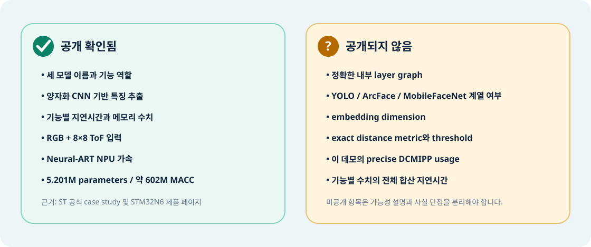

ST case study
센서, 모델명, 파라미터·MACC, latency, SRAM·Flash 결과의 핵심 출처.
08 · Technical guide
발표나 제안서에서 신뢰를 잃지 않도록, 공식 자료로 말할 수 있는 것과 아직 말할 수 없는 것을 한눈에 분리합니다.
Evidence map

Statement guide
| 항목 | 권장 표현 | 상태 |
|---|---|---|
| 모델 구성 | MicroFace SDK는 FaceDetector4B, FaceEncoder9B, FacePAD4A를 사용합니다. | 확인 |
| AI 가속 | 신경망 workload는 STM32N6 Neural-ART NPU에서 가속됩니다. | 확인 |
| 특징 추출 | 양자화 CNN이 compact biometric feature를 만듭니다. | 확인 |
| 내부 구조 | 정확한 layer graph는 공개되지 않았습니다. | 미공개 |
| 모델 계열 | YOLO·ArcFace·MobileFaceNet 계열인지 공식 확인할 수 없습니다. | 미공개 |
| Embedding | 템플릿 크기는 공개됐지만 embedding dimension은 공개되지 않았습니다. | 미공개 |
| Matching | 1,000명 비교 시간은 공개됐지만 exact metric과 threshold는 미공개입니다. | 미공개 |
| 카메라 경로 | STM32N6의 카메라/ISP 역량은 알려졌으나 이 데모의 precise DCMIPP usage는 미공개입니다. | 미공개 |
Sources
아래 링크는 2026-09-07에 확인한 ST 공식 페이지입니다.
센서, 모델명, 파라미터·MACC, latency, SRAM·Flash 결과의 핵심 출처.
Cortex-M55, Neural-ART 최대 600 GOPS, MCU 플랫폼 기능의 출처.
STM32N6용 실시간 embedded face recognition kit의 공식 파트너 제품 설명.
“이 데모는 Sony IMX335 RGB와 VL53L5CX 8×8 ToF 입력을 STM32N6에서 처리해 얼굴 검출, 생체성 확인, 특징 추출, 1:N 매칭을 로컬로 수행합니다. MicroFace의 세 모델은 Neural-ART NPU로 가속되며, ST는 검출 8 ms, 특징 추출 20 ms, PAD 60 ms, 1,000명 매칭 4.5 ms를 공개했습니다. 다만 layer 구조와 embedding 차원, 정확한 거리 함수는 공개되지 않았습니다.”